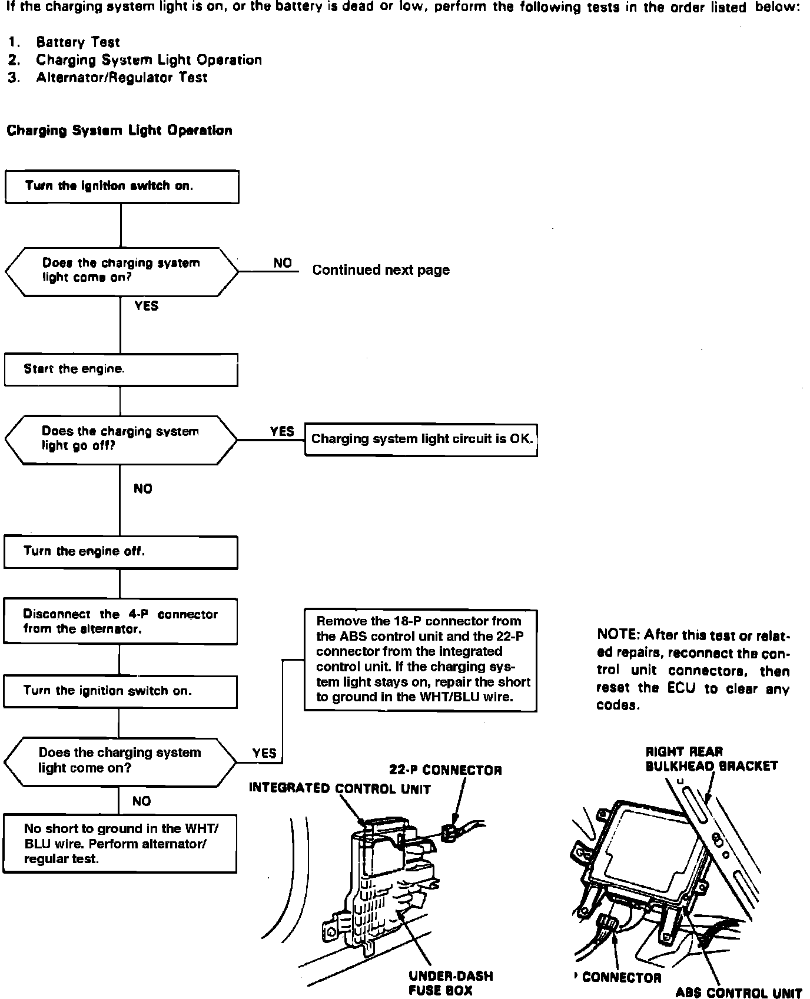
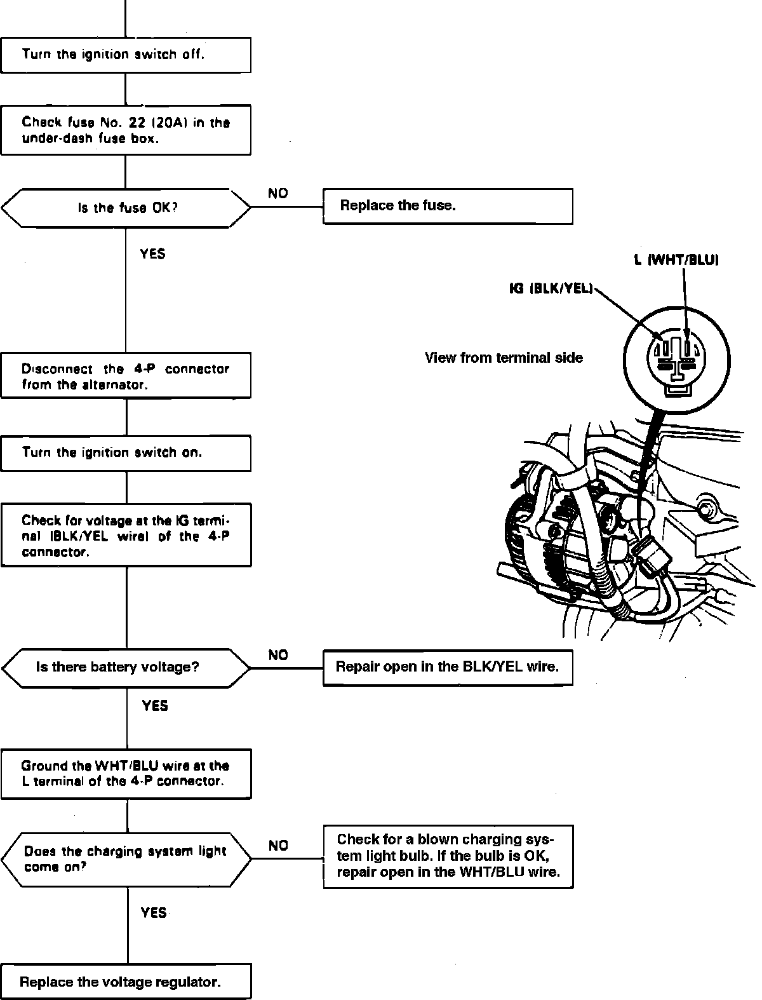

Operation CHARM
: Car repair manuals for everyone.
Home
>>
Acura
>>
1992
>>
Legend Sedan V6-3206cc 3.2L SOHC FI
>>
Repair and Diagnosis
>>
Instrument Panel, Gauges and Warning Indicators
>>
Charge Lamp/Indicator
>>
Testing and Inspection
Charge Lamp/Indicator: Testing and Inspection
Fig. 16 Charging System Light Operation Test:

Fig. 16 Charging System Light Operation Test:
